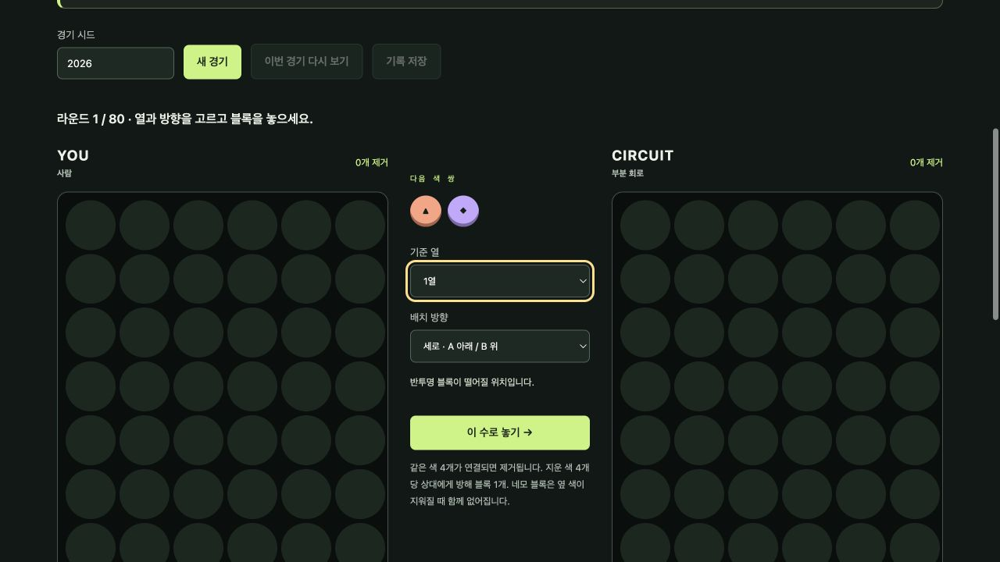
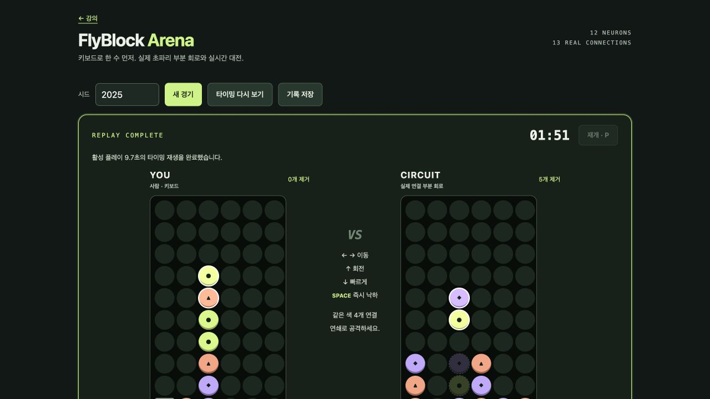

FlyBlock · 키보드와 실시간성 개선 / UPDATE 01
막대는 직전 보고부터 다음 보고까지의 경과이며 서로 배타적인 작업 시간 분류가 아닙니다.
실제 UTC 관찰 시각의 차이입니다. 조사·구현·시험·대기를 포함하며 순수 코딩 시간은 아닙니다. 최초 제작 시간과 합산하지 않습니다. 첫 공개 확인 이후 보고서 재게시 시간은 제외합니다.


{"timestamp": "2026-09-23T01:36:32.629582+00:00", "event": "started", "stage": "started"}{"timestamp": "2026-09-23T01:37:01.036345+00:00", "stage": "onboarded", "event": "onboarded"}현재 불편의 원인은 열·방향 드롭다운을 고른 뒤 양쪽 보드가 한 번에 진행되는 라운드 방식입니다. 승인된 업데이트 설계에 따라 독립적으로 떨어지는 두 보드와 키보드 조작을 추가하고, 기존 라운드 시험·측정 원본은 그대로 보존하겠습니다.
{"timestamp": "2026-09-23T01:38:27.654408+00:00", "stage": "plan_ready", "event": "plan_ready"}업데이트 계약을 고정했습니다. 50ms 고정 틱, 500ms 자동 낙하, 실제 신경회로가 고른 도달 가능한 목표, 120초 경기, 틱별 입력 리플레이로 구현합니다. 공격은 상대 대기열에 즉시 전달하고 다음 블록 잠금 때 적용합니다. 포커스 이탈 일시정지와 재시작 시 기존 실행 취소를 별도 어댑터 시험으로 검증하겠습니다.
Node: 10 seeds with hard/rotation/left input sequences through termination; each recorded replay matched stable snapshots exactly. 10 games + 10 replays, observed elapsed 344ms. This is deterministic regression, not browser responsiveness evidence.
Independent reviewer found no P0/P1 in realtime.js,input.js,controller.js,test-realtime.cjs. Seven suites and three completed-game replay comparisons passed. UI excluded because under implementation; exact prompt/response preserved.
{"timestamp": "2026-09-23T01:44:27.029483+00:00", "stage": "implementation_ready", "event": "implementation_ready"}키보드·터치 UI와 실시간 런타임을 연결했습니다. 화면은 시작 대기 상태로 열리고, 두 보드의 낙하 블록·착지 예상 위치·남은 시간·공격 대기열이 표시됩니다. P/포커스 이탈 일시정지, 재시작 시 실행 취소, 입력 타이밍 리플레이를 구현했으므로 브라우저 통합 검증을 시작하셔도 됩니다.
기존 test.cjs가 실행 시 초기 evidence/evaluation.json을 자동 덮어쓰는 동작을 발견했습니다. 업데이트에서 기본 쓰기를 없애고 FLYBLOCK_EVALUATION_OUTPUT 지정 시에만 별도 기록하도록 수정했습니다. 01:45:06 재측정 파일은 업데이트/legacy-evaluation-earlier-regression.json에 보존하고 초기 evidence 파일은 HEAD 원본으로 복원했습니다. 이후 회귀 결과는 업데이트 폴더에만 기록했습니다.
Desktop real browser: automatic falling on both boards; ArrowLeft/ArrowUp and Space; P pause with timer unchanged across observations; resume and touch buttons; seed focus pauses and ArrowDown in input leaves game unchanged; 9.7s replay matches human board, circuit board, timer and lock history exactly; console errors none; actual after.png captured. Mobile viewport requested 390x844 but browser reported 1280: mobile visual verification unavailable, no mobile pass claimed.
Independent app.js read-only review: no P0/P1. Scope input/focus/pause, replay input block and restart ownership. Exact followup prompt/response preserved.
{"timestamp": "2026-09-23T01:48:12.660808+00:00", "stage": "tests_passed", "event": "tests_passed"}새 실시간/입력 7개 시험군과 기존 엔진·신경회로 회귀 검증이 통과했습니다. 동시 종료 fixture의 잘못된 높이 수정과 과거 평가 파일 덮어쓰기 부작용 수정은 별도 디버그 사례로 기록했습니다. 메인 에이전트의 데스크톱 브라우저 검증과 9.7초 타이밍 재생 UI 일치도 확인되었으며, 모바일 실기 검증은 도구 제약으로 미확인입니다.
{"timestamp": "2026-09-23T01:48:42.173297+00:00", "stage": "handoff", "event": "handoff"}FlyBlock 키보드·실시간 업데이트를 완료했습니다. - `realtime.js`에 50ms 고정 틱, 독립 낙하·충돌·회전·잠금·공격 대기열·120초 종료·타이밍 리플레이를 구현했습니다. - 실제 12뉴런/13연결 모델이 도달 가능한 목표를 선택하고 상대가 화면에서 이동합니다. 무작위 봇으로 대체하지 않습니다. - 작은 헤더와 보드 중심 화면, 키보드/터치, 포커스 이탈 일시정지, 안전한 재시작, 재생 중 입력 차단을 적용했습니다. - 새 실시간/입력 7개 시험군과 기존 엔진·컨트롤러 회귀가 통과했습니다. 메인 에이전트는 데스크톱 자동 낙하·조작·정지·입력란 분리와 9.7초 타이밍 재생 UI 일치를 확인했습니다. 모바일 실기 검증은 도구 제약으로 미확인입니다. - 실제 요청 프롬프트·UTC 단계·공개 응답·실패/수정 시험 출력은 `updates/keyboard-realtime-01/`에 보존했습니다. 동시 종료 fixture 수정과 초기 평가 파일 덮어쓰기 부작용 수정도 기록했습니다. - 최초 `evidence/`는 Git 원본과 동일하게 보존했습니다. 과거 40경기 기준선은 구 라운드 모드 측정임을 화면과 문서에서 구분했습니다. 커밋은 만들지 않았습니다.
Integrated worker handoff, passing legacy and seven realtime/input suites, deterministic ten-seed replay stress, desktop keyboard/focus/replay browser checks, exact screenshot, independent core/UI blocker reviews, course IDs/checklists and evidence links. Mobile viewport verification unavailable as separately recorded. Original initial evidence unchanged.
First public updated demo verified: GitHub Pages workflow 35807870461 succeeded at commit 4f8792a90e194c8b46cedb37ee855fa7fc0714da; fetched game HTML/app/runtime/input/controller/CSS, update report, gallery and course HTML all match local bytes. This timestamp precedes the report-only followup publication.
Public game opened, started, ArrowLeft accepted; both boards progressed automatically to 01:49, P paused. Visible board and timer inspected, console errors none. Browser tab retained as deliverable.
User request: "초파리 부분회로 대전 게임" 이거 인터페이스가 좀 불편함. 키보드와 실시간성을 부여해줘. 이것도 마찬가지로 시간을 측정하고 디버그나 업데이트 개념으로 프롬프트도 만들고 해줘야겠음. Implement this authorized update only inside projects/flyblock/. Preserve existing evidence/ initial run logs, screenshots and baseline measurements. New update evidence belongs updates/keyboard-realtime-01/. Do not commit or edit shared course/gallery. Read existing app/engine/controller and README. Diagnose dropdown/round-step interaction. Make polished Korean keyboard REAL-TIME falling-pair gameplay: left/right, Up rotate, Down soft drop, Space hard drop, P pause/resume, explicit start/restart, touch equivalents. Two boards evolve continuously, genuine visible falling pairs, collision/lock/clear/garbage; actual neural model chooses opponent targets (same 12 real neurons, no fake fallback). Can introduce separate realtime.js pure runtime while preserving existing round engine/evaluation as explicitly legacy benchmark. Need independent per-board state and deterministic fixed-step simulation, real-time attacks, clear end/win/draw contract. Explicitly document any rule simplification; original game brand/assets not copied. UI prioritize boards and controls above research details; shrink header; page opens ready (not auto losing before user starts); keyboard only when game surface focused, ignore editable fields and modifiers. Prevent default scroll ONLY handled keys in active game scope. Pause on blur/hidden; no catch-up burst on resume. Cancel old timers/replays/evaluation on restart; no repeated instant drops from key autorepeat. Error stops all loops, no baseline substitution. Keep accessible status, visible focus, touch buttons, responsive compact layout. Replay must reproduce new simulation including timing/actions, seed and model revision, not falsely label old round logs as same real-time game. Replaying excludes live controls. Freeze original baseline20+20 results and explain they measure old turn-based algorithm, not new live mode. Meaningful tests: spawn/collision/wall/rotation, auto falling, soft/hard drop, pause/resume, fixed-step deterministic replay, opponent actual neural output, endgame/garbage, repeated timers/restarts and focused keyboard/editable handling (minimal DOM adapter test acceptable but distinguish real browser). Immediately record actual UTC started and subsequent onboarded, plan_ready, implementation_ready, tests_passed, handoff in update events.jsonl. Save exact public messages sent to root with stage/time/kind=response; actual commands/output tests.txt; concise diagnosis/spec/plan and changed files in README.md. Before final return save exact final response in response.md. Capture failures honestly, no invented prompts/times or reasoning traces. Root measures UI/integration/deployment separately and will capture screenshots. Complete code, tests, self-review; report blocked prerequisites promptly.
{
"message": "실제 사용자 업데이트 요청입니다. projects/flyblock/updates/keyboard-realtime-01/prompt.txt 원문을 읽고 실행해 주세요. 키보드+실시간 자동 낙하 대전, 포커스/일시정지/타이밍 리플레이, 실제 업데이트 프롬프트·공개 응답·UTC 시간 기록이 범위입니다. docs/plans/flyblock-realtime-update.md 참고. 본인 projects/flyblock만 수정하며 기존 evidence 원본 보존. 커밋하지 마세요. 실제 시작 시각부터 기록하고 완성·테스트·자체검토까지 진행하세요.",
"recorded_after_dispatch_utc": "2026-09-23T01:36:59.392184+00:00",
"agent": "implement_flyblock",
"classification": {
"provider": "TypeSafe",
"model": "jev-1.13.0",
"update": "complex",
"update_confidence": 1.0,
"audit": "simple",
"audit_confidence": 1.0,
"input_tokens": 411,
"output_tokens": 59
}
}
# 키보드·실시간 업데이트 — 진단과 실행 계획 기존 문제: 열·방향 드롭다운 → 확정 버튼 → 양측 동시 한 라운드가 진행되었습니다. 낙하 중 움직임·키보드·독립적인 상대 진행이 없었습니다. 승인된 변경: 두 보드가 50ms 고정 틱으로 독립 진행하고, 500ms마다 현재 블록이 한 칸 떨어집니다. 사람은 ←/→ 이동, ↑ 회전, ↓ 한 칸 빠르게, Space 즉시 낙하, P 일시정지/재개를 사용합니다. 터치 버튼도 제공합니다. 시작 전에는 시간이 흐르지 않습니다. 변경 계약: - 새 `realtime.js`는 기존 순수 라운드 엔진의 제거·방해 블록 규칙을 재사용합니다. 현재 움직이는 블록의 충돌·회전·경로·독립 잠금·공격 대기열·종료를 담당합니다. - 두 칸은 낙하 중 함께 움직이고 잠길 때 각 열의 중력을 적용합니다. 벽 회전은 좌우 한 칸 보정만 허용하며 천장 위 회전은 거부합니다. - 상대는 같은 실제 12뉴런/13연결 모델이 **도달 가능한 수** 중 목표를 선택하며, 화면에서 150ms마다 해당 경로를 한 단계씩 실행합니다. 공간이 없어지면 실제 회로로 다시 판단합니다. 실패하면 전체 경기를 중지합니다. - 공격은 즉시 상대 대기열에 넣고 상대 블록이 다음 잠금에 도달할 때 반영합니다. 같은 틱의 공격은 모아 동시에 전달합니다. 진행 중인 블록과 겹치는 방해 블록 삽입을 피하기 위한 명시적 단순화입니다. - 중앙 생성 위치가 막히거나 방해 블록이 넘치면 패배, 같은 틱 양쪽 패배는 무승부입니다. 활성 플레이 120초에는 제거한 색 블록 수로 판정합니다. - 키보드는 포커스된 게임 영역에서만 동작합니다. 입력 필드·수정키 조합을 무시합니다. Space/회전/P 자동 반복은 추가 동작을 만들지 않습니다. 포커스 이탈·창 전환·페이지 숨김에는 일시정지하며 자동으로 재개하지 않습니다. - 리플레이에는 틱별 사람 입력·시드·런타임/모델 버전·최종 틱을 저장합니다. 일시정지 구간에는 시뮬레이션 틱이 없고, 재생은 활성 플레이 시간으로 진행합니다. 이전 라운드 로그와 호환된다고 표시하지 않습니다. - 기존 `evidence/` 로그·스크린샷·40경기 기준선은 동결합니다. 기준선은 구 라운드 방식 결과임을 명시합니다. 작업 순서: 순수 런타임과 입력/시계 어댑터 → 단위/회귀 시험 → 작은 헤더와 보드 중심 UI → 입력/재생/중단 자체 검토 → 메인 에이전트 브라우저 검증. 증거는 이 폴더의 `prompt.txt`, `events.jsonl`, `tests.txt`, `response.md`에 기록합니다. 최초 구현 기록을 덮어쓰지 않습니다. 실제 브라우저 검증과 공개 배포 시각은 메인 에이전트가 별도로 기록합니다. ## 실제 변경 파일과 검증 - `realtime.js`: 독립 보드·현재 블록·충돌/회전·도달 가능한 경로·공격 대기열·고정 틱·기록/리플레이입니다. - `input.js`: 편집/수정키/자동반복 경계와 단일 RAF 시계입니다. 취소된 과거 콜백은 세대 번호로 무효화합니다. - `controller.js`: 원본 연결과 계산 방식은 유지하고 도달 가능한 후보 수 필터를 선택 인자로 추가했습니다. - `app.js`, `index.html`, `style.css`: 작은 헤더, 보드 중심 화면, 키보드/터치, 포커스 이탈 일시정지, 리플레이 연결입니다. - `test-realtime.cjs`: 새 동작의 7개 시험군입니다. `test.cjs`는 과거 측정 원본을 더는 자동 덮어쓰지 않도록 별도 출력 경로 옵션을 받습니다. - `README.md`: 새 모드와 구 라운드 측정의 차이를 구분했습니다. `tests.txt` 첫 실패는 제품 버그가 아니라 **동시 종료 시험 데이터** 오류였습니다. 회로 보드에 한 칸 더 내려갈 공간이 있어 같은 틱에 잠기지 않았는데 무승부를 기대했습니다. 쌓인 높이를7에서8로 수정해 두 보드가 같은 틱에 잠기는 조건을 만든 뒤 통과했습니다. 실제 실패 출력과 수정 이유를 모두 남겼습니다. 새 입력·런타임 시험, 기존 엔진/컨트롤러 회귀 및 과거 기준선40경기 재측정이 통과했습니다. 재측정값은 `legacy-evaluation-regression.json`이며 최초 `evidence/evaluation.json`은 변경하지 않았습니다. 실제 브라우저 UI 검증은 메인 에이전트가 별도로 기록합니다. ### 증거 보존 디버그 자체 검토에서 과거 `test.cjs`를 실행하면 최초 `evidence/evaluation.json`의 시각·지연값을 덮어쓰는 부작용을 발견했습니다. 기존 파일의 01:45:06 재측정 내용은 `legacy-evaluation-earlier-regression.json`으로 보존하고 최초 파일은 Git HEAD 원본으로 복구했습니다. 기본 시험은 이제 출력 파일을 쓰지 않으며 `FLYBLOCK_EVALUATION_OUTPUT`을 명시했을 때만 지정 경로에 씁니다. 이는 위 동시 종료 fixture 수정과 달리 실제 시험 도구의 부작용 수정입니다. 메인 에이전트는 데스크톱 브라우저에서 자동 낙하, 키보드/터치, P 일시정지, 입력란 포커스 분리, 9.7초 타이밍 재생의 UI 일치를 확인했습니다. 모바일 뷰포트 도구가390 요청에도1280을 반환해 모바일 실기 검증은 미확인입니다. 이 결과의 스크린샷·통합 기록은 메인 에이전트 관리 파일을 확인하세요.
FlyBlock 키보드·실시간 업데이트를 완료했습니다. - `realtime.js`에 50ms 고정 틱, 독립 낙하·충돌·회전·잠금·공격 대기열·120초 종료·타이밍 리플레이를 구현했습니다. - 실제 12뉴런/13연결 모델이 도달 가능한 목표를 선택하고 상대가 화면에서 이동합니다. 무작위 봇으로 대체하지 않습니다. - 작은 헤더와 보드 중심 화면, 키보드/터치, 포커스 이탈 일시정지, 안전한 재시작, 재생 중 입력 차단을 적용했습니다. - 새 실시간/입력 7개 시험군과 기존 엔진·컨트롤러 회귀가 통과했습니다. 메인 에이전트는 데스크톱 자동 낙하·조작·정지·입력란 분리와 9.7초 타이밍 재생 UI 일치를 확인했습니다. 모바일 실기 검증은 도구 제약으로 미확인입니다. - 실제 요청 프롬프트·UTC 단계·공개 응답·실패/수정 시험 출력은 `updates/keyboard-realtime-01/`에 보존했습니다. 동시 종료 fixture 수정과 초기 평가 파일 덮어쓰기 부작용 수정도 기록했습니다. - 최초 `evidence/`는 Git 원본과 동일하게 보존했습니다. 과거 40경기 기준선은 구 라운드 모드 측정임을 화면과 문서에서 구분했습니다. 커밋은 만들지 않았습니다.
Initial command: node projects/flyblock/test-realtime.cjs
PASS ready does not advance; independent falling and actual neural output
PASS walls, collision, rotation and landing
PASS soft drop and hard drop lock once per tick; pauses freeze and resume
node:assert:150
throw new AssertionError(obj);
^
AssertionError [ERR_ASSERTION]: Expected values to be strictly equal:
'회로 승리' !== '무승부'
at /Users/caspar/Projects-Codex/TheMagicTower/SkillProject/projects/flyblock/test-realtime.cjs:7:229
at test (/Users/caspar/Projects-Codex/TheMagicTower/SkillProject/projects/flyblock/test-realtime.cjs:2:39)
at Object.<anonymous> (/Users/caspar/Projects-Codex/TheMagicTower/SkillProject/projects/flyblock/test-realtime.cjs:6:1)
at Module._compile (node:internal/modules/cjs/loader:1781:14)
at Object..js (node:internal/modules/cjs/loader:1913:10)
at Module.load (node:internal/modules/cjs/loader:1505:32)
at Function._load (node:internal/modules/cjs/loader:1309:12)
at wrapModuleLoad (node:internal/modules/cjs/loader:254:19)
at Function.executeUserEntryPoint [as runMain] (node:internal/modules/run_main:171:5)
at node:internal/main/run_main_module:36:49 {
generatedMessage: true,
code: 'ERR_ASSERTION',
actual: '회로 승리',
expected: '무승부',
operator: 'strictEqual',
diff: 'simple'
}
Node.js v22.23.1
Debug: simultaneous top-out fixture had one free downward cell for AI. Corrected settled height from 7 to 8 so both boards lock on same tick.
Rerun: node projects/flyblock/test-realtime.cjs
PASS ready does not advance; independent falling and actual neural output
PASS walls, collision, rotation and landing
PASS soft drop and hard drop lock once per tick; pauses freeze and resume
PASS queued garbage applied at lock; simultaneous top-out is draw
PASS deterministic timed replay, version rejection, terminal time limit
PASS focused keyboard, editable fields, modifiers, autorepeat, paused/replay controls
PASS single clock on repeat starts, stale callbacks cancelled, no resume burst, lag pauses
PASS 7 realtime/input suites
Regression commands: node projects/flyblock/test-realtime.cjs
FLYBLOCK_EVALUATION_OUTPUT=projects/flyblock/updates/keyboard-realtime-01/legacy-evaluation-regression.json node projects/flyblock/test.cjs
PASS ready does not advance; independent falling and actual neural output
PASS walls, collision, rotation and landing
PASS soft drop and hard drop lock once per tick; pauses freeze and resume
PASS queued garbage applied at lock; simultaneous top-out is draw
PASS deterministic timed replay, version rejection, terminal time limit
PASS focused keyboard, editable fields, modifiers, autorepeat, paused/replay controls
PASS single clock on repeat starts, stale callbacks cancelled, no resume burst, lag pauses
PASS 7 realtime/input suites
PASS: group clear, garbage adjacency, 2-chain, invalid placement, input immutability, garbage/overflow, deterministic simulation, connection ablation, legal neural output, match completion, replay, ended match guard
{"fixedSeed":2026,"rounds":80,"result":"회로 승리","cleared":[140,144],"neurons":12,"edges":13,"spikes":[29,27,36,20,31,17]}
[{"baseline":"random","seeds":20,"win":16,"draw":0,"loss":4,"failures":0,"cleared":1921,"moves":1244,"median_ms":0.20058300000000884},{"baseline":"low","seeds":20,"win":3,"draw":1,"loss":16,"failures":0,"cleared":2043,"moves":1381,"median_ms":0.20195800000004738}]
Syntax commands passed without output:
node --check projects/flyblock/app.js
node --check projects/flyblock/realtime.js
node --check projects/flyblock/input.js
FlyBlock 실시간 업데이트 핵심 검토입니다. /Users/caspar/Projects-Codex/TheMagicTower/SkillProject projects/flyblock/{realtime.js,input.js,controller.js,test-realtime.cjs}를 읽고 재현 가능한 blocker(P0/P1)만 검토해 주세요. 실제 입력/물리 규칙/공격 종료/결정적 리플레이/타이머 취소가 범위입니다. 기존 engine.js 참고. implement_flyblock이 HTML/CSS/app UI를 현재 작성 중이므로 아직 UI 검토는 제외하고 핵심만 읽기 전용, 수정·커밋 금지. 결과를 루트로 보고해 주세요. 새 규칙 README는 projects/flyblock/updates/keyboard-realtime-01/README.md.
후속 메시지:
UI 구현 완료되었습니다. 추가로 projects/flyblock/app.js만 P0/P1 검토 부탁드립니다. 입력/포커스/일시정지와 리플레이/재시작 소유권이 범위이고 core는 기존 검토 통과 그대로입니다. 루트 브라우저 현재 자동낙하·P정지·입력란 정지·터치조작 통과, 타이밍 재생 확인중. 읽기 전용입니다.
실행 요청:
방금 보낸 UI 추가 검토를 진행해 주세요. 범위 app.js의 P0/P1, 입력/포커스/일시정지/리플레이/재시작입니다. 읽기 전용이고 수정하지 마세요.
**P0/P1 블로커를 발견하지 못했습니다.** - 핵심 4개 파일과 기존 엔진·업데이트 계약을 검토했습니다. - `test-realtime.cjs`의 7개 입력·물리·공격·종료·리플레이·타이머 검사군이 통과했습니다. - 시드 1·7·2026으로 종료까지 진행한 뒤 재생한 전체 상태가 원본과 동일했습니다. UI는 검토하지 않았으며 파일 수정·커밋은 하지 않았습니다. --- app.js 후속 검토의 실제 응답: `app.js` 추가 검토에서 **P0/P1 블로커를 발견하지 못했습니다.** 입력 범위·포커스 이탈 정지·명시적 재개, 리플레이 중 입력 차단, 재시작 시 입력 큐·리플레이 상태·기존 타이머 소유권 초기화가 일관됩니다. 일시정지 버튼이 게임 영역 내부에 배치된 것도 확인했습니다. 읽기 전용 코드 검토이며 새 브라우저 검증이나 파일 수정은 하지 않았습니다.
전체 내부 추론이나 모든 도구 호출을 수집한 자료는 아닙니다.